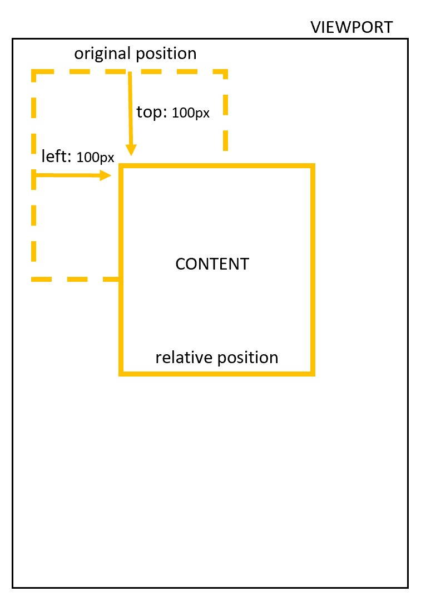
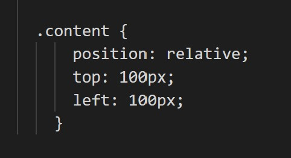
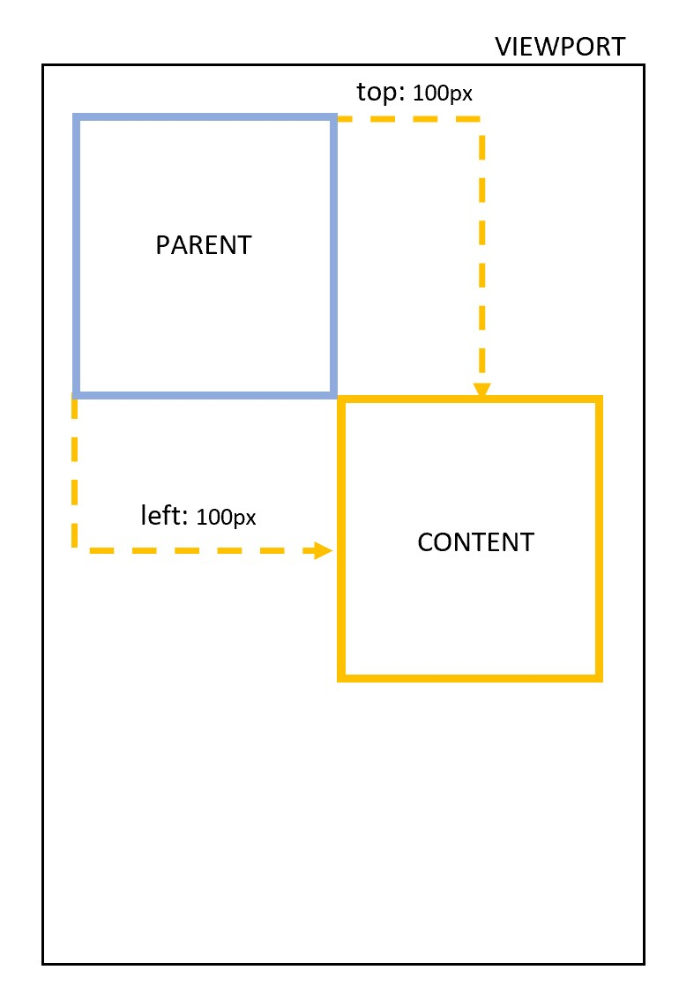
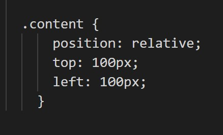
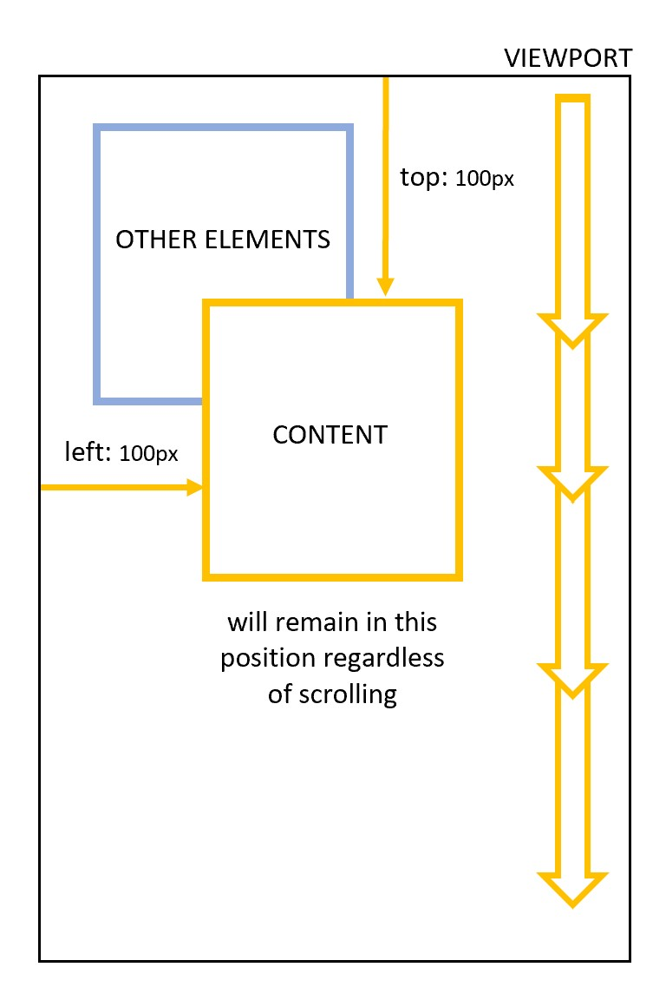
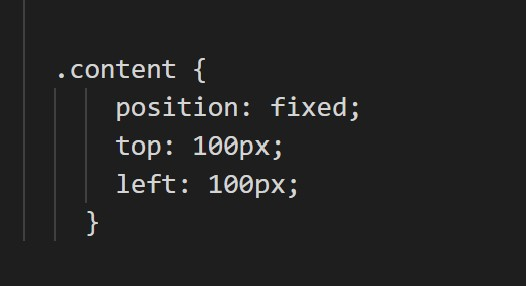

Document Flow
The document flow is pivitol to understanding the relationship and differences between relative, absolute and fixed positons.
A normal document flow refers to the way elements are placed within the view port of the document, usually vertically, before they've been styled with CSS
the position element may style the element within to the normal flow, or may remove it from the normal flow completely
| Reference images |
Reference Code |
Position and Explaination |
|  |
 |
Relative Positon
- Positoned using top, bottom left and/or right
- Where the element is placed relative to its original position within the flow
- Remains within the normal flow
|
|  |
 |
Absolute Positon
- Positoned using top, bottom left and/or right
- Where the element is placed relative to its parent's position within the flow
- The parent element must contain a position eg. relative for the element to reference
- If no parent element is specified it becomes relative to the body element
- Removed from the normal flow and can overlap elements
|
|  |
 |
Fixed Positon
- Positoned using top, bottom left and/or right
- The element is fixed to a position within the viewport meaning it will stay in the same place
- Element is removed from the normal flow
|